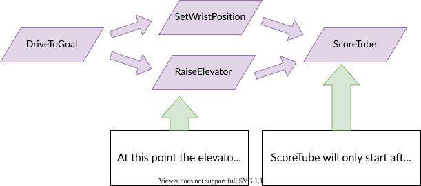

11. Drivetrain Project: Autonomous#
Why it matters#
The first 15 seconds of every match have no driver input. The robot runs entirely on code. Autonomous points often decide close matches, and a reliable auto is one of the things alliance captains look for when picking partners.
In this lesson you'll build autonomous routines step by step: first a simple timed drive, then driving by measured distance, then multi-step routines, and finally a dashboard menu so the drive team can pick a routine before each match.
Read this#
Walkthrough#
How autonomous starts and stops#
In the Command Robot template, Robot.java already handles this:
- When autonomous begins,
autonomousInit()callsrobotContainer.getAutonomousCommand()and schedules whatever it returns. - The scheduler runs that command every loop.
- When teleop begins,
teleopInit()cancels it, in case it's still running.
So your whole job is to make getAutonomousCommand() return the right command. That command is usually built from smaller commands you already have.
Building routines from small commands#
Command compositions chain commands together like sentences:
| Composition | Meaning | Ends when |
|---|---|---|
a.andThen(b) |
Run a, then b |
b ends |
a.alongWith(b) |
Run both at the same time | both end |
a.raceWith(b) |
Run both at the same time | either ends (the other is canceled) |
a.deadlineFor(b) |
Run both at the same time | a ends (b is canceled) |
a.withTimeout(2.0) |
Run a, but give up after 2 seconds |
a ends or time runs out |
a.until(condition) |
Run a until condition is true |
a ends or the condition is true |
Compositions let several things happen at once, then wait for all of them before moving on:

Moving the wrist and elevator in parallel, then scoring once both are done. From the WPILib docs source, concurrent-commands.drawio.svg (CC BY 4.0).

The Commands class has matching helpers for longer lists:
Commands.sequence(a, b, c) // a, then b, then c
Commands.parallel(a, b) // all at once, until all end
Commands.race(a, b) // all at once, until any ends
Commands.deadline(a, b, c) // all at once, until the first one (a) ends
Commands.waitSeconds(1.0) // pause
Parallel commands can't share a subsystem
drivetrain.arcadeDrive(...).alongWith(drivetrain.driveDistance(...)) is an error: both require the drivetrain. Parallel commands must use different subsystems, like driving while running the intake.
Version 1: a timed auto#
The simplest auto drives at a fixed speed for a fixed time. Add to Drivetrain.java:
public Command driveForSeconds(double speed, double seconds) {
return run(() -> drive.arcadeDrive(speed, 0, false)) // false = don't square the input
.withTimeout(seconds)
.finallyDo(() -> drive.stopMotor())
.withName("Drive " + seconds + "s");
}
.finallyDo(...) runs when the command ends for any reason: finished, timed out, or canceled. Use it to make sure motors always stop.
Then in RobotContainer.java:
public Command getAutonomousCommand() {
return drivetrain.driveForSeconds(0.5, 2.0);
}
Run it in the Sim GUI: select Autonomous, then enable.
Timed autos are unreliable
The same motor output moves the robot different distances depending on battery charge, wheel wear, carpet, and robot weight. A timed auto that's perfect on a fresh battery comes up short on a tired one. Use it to get started, then switch to distance.
Version 2: drive by distance#
With encoders, the robot can drive until it has actually gone the right distance:
public Command driveDistance(double meters, double speed) {
return runOnce(this::resetEncoders)
.andThen(run(() -> drive.arcadeDrive(Math.copySign(speed, meters), 0, false)))
.until(() -> Math.abs(getDistanceMeters()) >= Math.abs(meters))
.finallyDo(() -> drive.stopMotor())
.withName("Drive " + meters + " m");
}
Reading it line by line:
- Reset the encoders to 0, once.
- Then drive at
speed, in the direction ofmeters(negative = backward). - Stop as soon as the measured distance reaches the target.
- Always stop the motors at the end.
This is much more consistent than a timer, but it still overshoots a little, because the robot is moving at full speed when it reaches the target and takes time to stop. In Lesson 12 you'll replace the fixed speed with a PID controller that slows down smoothly as it arrives.
Add a safety timeout
If an encoder is unplugged, the distance never increases and the robot drives forever. Add .withTimeout(5.0) to any distance command, so a broken sensor can't send the robot across the field.
Version 3: a multi-step routine#
Real autos combine several actions. Here's "drive out, score, drive back," using the intake from Lesson 7:
public Command scoreAndBackUp() {
return Commands.sequence(
drivetrain.driveDistance(1.5, 0.5).withTimeout(4.0), // drive out
intake.outtake().withTimeout(0.5), // score
Commands.waitSeconds(0.25), // let the piece clear
drivetrain.driveDistance(-1.0, 0.5).withTimeout(4.0) // back up
).withName("Score and Back Up");
}
And one that runs mechanisms at the same time, picking up a game piece while driving:
public Command driveAndIntake() {
return Commands.deadline(
drivetrain.driveDistance(2.0, 0.4).withTimeout(5.0), // the deadline
intake.runIntake() // runs until driving ends
).withName("Drive and Intake");
}
deadline ends when the drive finishes, and cancels the intake at the same moment.
Write autos as named methods
Build each routine in its own method, like scoreAndBackUp(). Each call makes a fresh command object. Reusing one command object in two routines causes an error, because a command can only belong to one composition.
Let the drive team choose: DashChooser#
Different match strategies need different autos. A DashChooser (Lesson 6.1) puts a dropdown menu in Elastic:
private final DashChooser<Command> autoChooser = new DashChooser<>("Auto");
public RobotContainer() {
// ...subsystems and default commands...
autoChooser.addDefault("Do nothing", Commands.none());
autoChooser.add("Drive forward 2 m", drivetrain.driveDistance(2.0, 0.5));
autoChooser.add("Score and back up", scoreAndBackUp());
autoChooser.add("Drive and intake", driveAndIntake());
configureBindings();
}
public Command getAutonomousCommand() {
return autoChooser.getSelected();
}
The drive team picks a routine in Elastic (the Auto table, shown as a ComboBox Chooser) before the match. Make "Do nothing" the default, so a robot whose drive team forgot to choose sits still instead of running a routine meant for a different starting spot.
Testing autos#
- In simulation first. Watch the dashboard distance and command names. Does each step start and end when you expect?
- On blocks. Wheels off the ground, check every step runs in order and the motors stop at the end.
- On the floor, in open space, with a person ready to disable. Mark the starting position with tape so every test starts the same way.
- Test with a partly drained battery too. That's what you'll have in some matches.
Try it#
Have the West Coast Drive?
Lab 7: Timed Autonomous builds a timed auto with a chooser on the real robot.
- Add
driveForSecondsand run it in simulation (select Autonomous, then enable) - Add
driveDistanceand confirm on the dashboard that it stops near the target distance - Build
scoreAndBackUp()and watch each step on the scheduler dashboard - Add a
DashChooserwith at least three options, with "Do nothing" as the default - Build a routine that uses
deadlineto run the intake while driving - Challenge: write
turnDegrees(double degrees)using the gyro from Lesson 8, and use it to drive a square
Check yourself#
What's the difference between andThen and alongWith?
andThen runs commands in sequence. alongWith runs them at the same time, ending when both are done.
What's the difference between race and deadline?
A race ends when any of its commands ends. A deadline ends when one specific command (the first one) ends.
Why are timed autos unreliable?
The same motor output moves the robot different distances depending on battery charge, wheel wear, and carpet.
Why add a timeout to a distance-based command?
If the encoder fails, the distance never reaches the target, and without a timeout the robot would drive forever.
Why should 'Do nothing' be the default auto?
If the drive team forgets to pick, the robot stays still instead of running a routine meant for a different starting position, which could hit another robot or a field element.